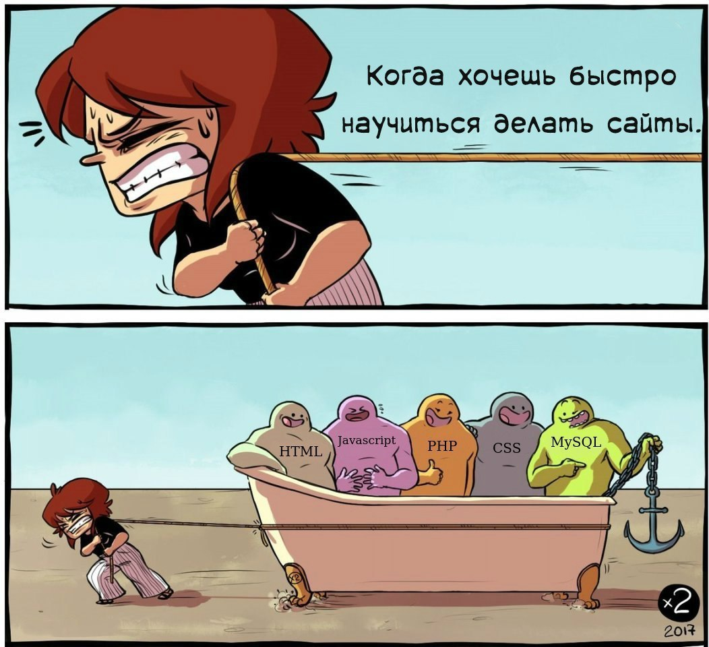
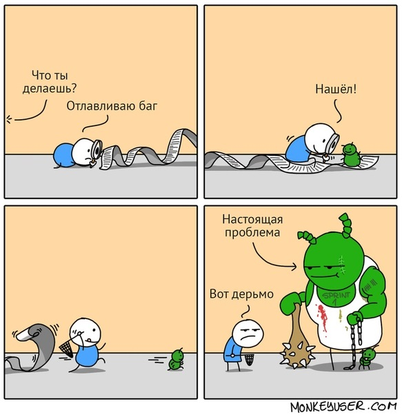
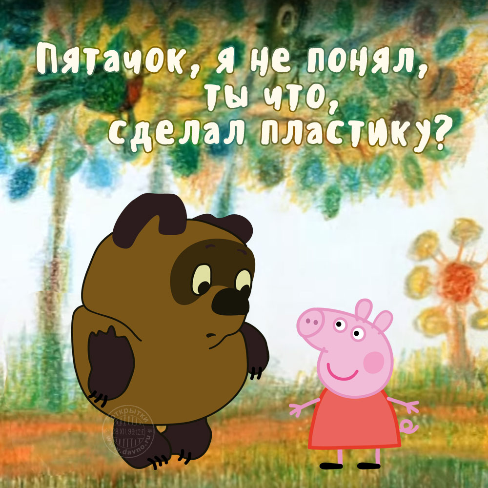

Я текст без смысловой нагрузки. Тут должно быть что-то очень интересное и конечно же важное! Такое, что захочется прочитать и вникнуть в каждое слово. Но увы и ах! Родился я, текст без смысловой нагрузки, но с очень важной функцией, быть тут и принять на себя все эксперименты от своей хозяйки. Она конечно же могла по гуглить и найти интересную статью и просто скопировать ее сюда. Но ведь на это надо потратить то ценное время, которое можно уделить экспериментам. Поэтому к ней на помощь пришел я! Я просто текст, поэтому читайте меня.
Моя хозяйка очень любит яркие оттенки. Вот только со вкусом стиля у нее проблемы, поэтому в основном получается картина в стиле "вырви глаз". И если вдруг, после просмотра этого чудо сайта, Вам стало плохо, закружилась голова и захотелось все забыть. То вот Вам лекарство, для этого нужно навести мышь на нижний блок.
Упс, моя хозяйка опять промахнулась....
К слову, я отдельный текст! Меня не рисовали в фотошоппе и я могу сам выбрать себе цвет.
Вот картинка, которая лечит и мотивирует! Вы только посмотрите на эту красоту. Высокие горы, как символ трудного пути. Но награда стоит того. Ничего не бойтесь, идите вперед к цели, даже если будут провалы, даже если на пути будут огромные и казалось бы недостижимые преграды. Это и есть часть пути, без этого никак. И вместо того, что бы сидеть, экспериментируйте!

А теперь я предлагаю Вам поиграть со мной в одну игру. Задача максимально проста, нужно найти где я загрузила картинку, а где использовала фон. А что бы не было скучно, картинки будут тематические и с ноткой юмора. Ну что, поехали? **на картинках есть ответ, чтобы ее увидеть, наведи мышь в верхную строку картинки
Я фон!
Я картинка! ↓
Я фон!
Я фон!
Я картинка! ↓
Я картинка! ↓
Я фон!